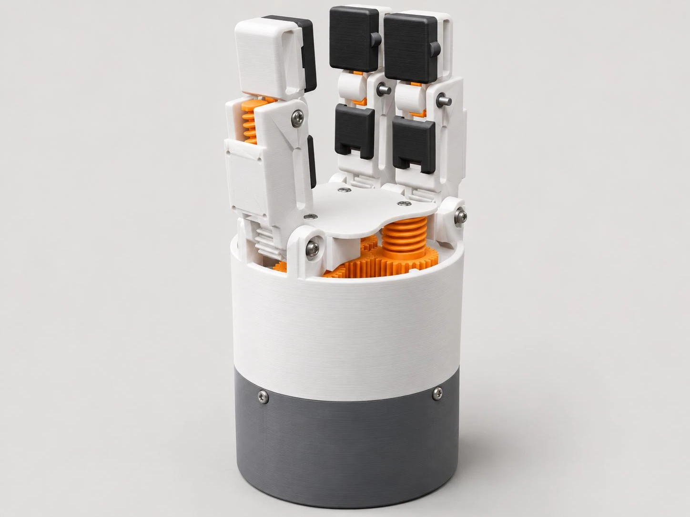

● Universidad EAFIT · 2026 · Grupo 1
Gripper de 3 dedos para el UR5e
Explora el ensamble V31 exportado del CAD: gira, acerca, separa las piezas y toca cualquiera para saber qué es.
arrastra · rueda · clic
Cargando ensamble V31 · 10 MB
24V
Única alimentación, desde el puerto de herramienta del UR5e
3
Dedos con sensor de fuerza FSR en la yema
2
PCB a una sola cara: potencia y control
126
Componentes en el ensamble CAD V31
● Explora el proyecto
Todo el gripper, por partes.
Mueve tres dedos, mide la fuerza de agarre y se comunica con el robot usando solo los 24 V del puerto de herramienta del UR5e.
01
Proyecto
El reto, el alcance, la arquitectura del sistema y el proceso de diseño.
Ver →
02Mecánica
Cómo cierran los dedos, por qué sostiene sin energía y cómo se imprimió.
Ver →
03Electrónica y control
Las dos tarjetas, los sensores y el programa del ESP32-S3.
Ver →
04En el UR5e
Cómo se monta en el robot y qué toma de su puerto de herramienta.
Ver →
05Documentos
Cálculos, validación en Working Model, informe y equipo.
Ver →
